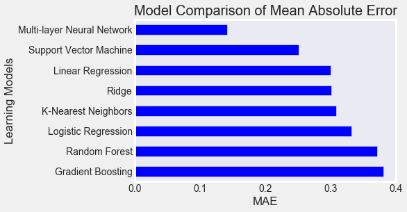
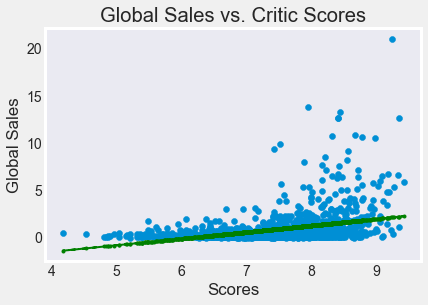
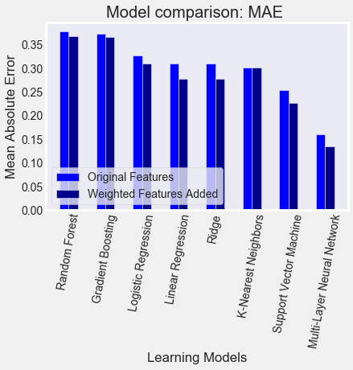

Model Comparison
-
Using linear regression models, video game sales appear to show a positive correlation with user scores and critic scores. The higher rating a game is assigned from players or critics, the more likely that particular game will have higher than average sales.
Implementing more data and other variables through different machine learning models to predict sales figures might allow for more accurate forecasting. And by using the mean absolute error to measure differences between our model's predicted outcomes and true values, it becomes an excellent point for comparison of accuracy.
Data includes all critic and user scores.
Identifying Feature Parameters
-
It is important to include the right features in the analysis, and to identify certain variables that might hold more weight in increasing accuracy.Looking at Critic Scores, it appears that any additional points given after a score of 7.5 significantly increases the predicted sales, much more so than points awarded below this threshold. Also, the more scores received by any one game looks to correlate to a higher score overall as well. We can weigh those variables respectively to generate better predictions.
Model Comparisons With Updated Features
-
The new features show improved performance accuracy.

-
-